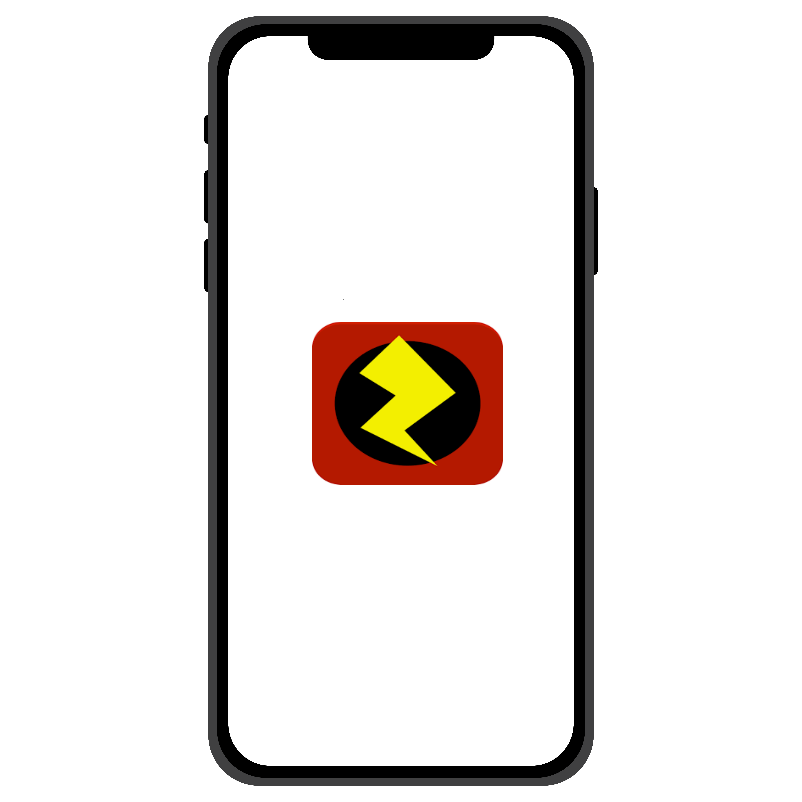

How It Works

Our AR app uses Zappar technology to scan QR codes or visual targets on machines. It then displays real-time measurements and other data about the machine on your mobile device.
Use Cases
- Preventive maintenance
- Troubleshooting
- Monitoring machine performance
With our AR technology, you can catch potential issues before they become costly repairs, quickly diagnose problems when they do occur, and optimize machine performance for maximum efficiency.
|  |
Try It Out TodayStart scanning right now |